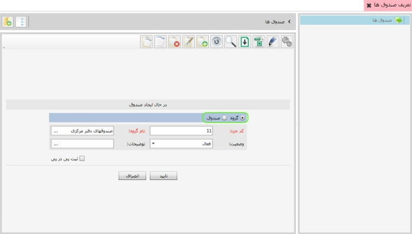

این گزینه امکان گروه بندی و تعریف صندوق ها را به شما می دهد، پیشنهاد می شود ابتدا به گروه بندی بپردازید، سپس صندوقها را در درون گروه ها تعریف نمایید برای گروه بندی و یا تعریف صندوق ها از نوار ابزار گزینه ی اضافه یا f8 را بزنید تصویر زیر نمایان می شود
در تصویر بالا درون کادر سبز رنگ دو گزینه مشاهده می کنید گزینه ی اول برای تعریف گروه و گزینه ی دوم برای تعریف صندوق می باشد برای تعریف گروه کافی است اطلاعات مربوط به آن را پر کرده و گزینه ی تایید را بزنید، برای تعریف یک صندوق در درون یک گروه، روی نام گروه مورد نظر دو بار کلیک کنید از نوار ابزار گزینه ی اضافه یا F8 را بزنید، گزینه ی ایجاد صندوق را فعال کنید،اطلاعات مربوط به آن را تکمیل کرده و گزینه ی تایید را بزنید